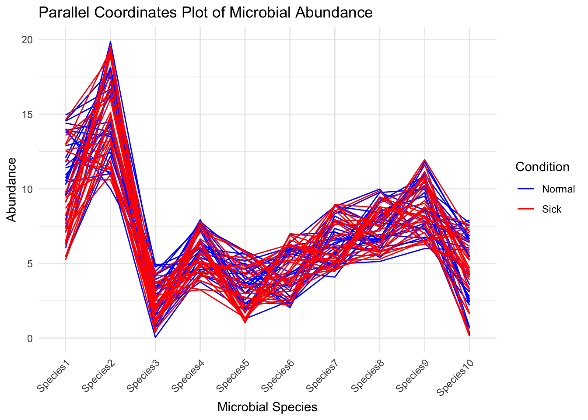

Code
# Load necessary libraries
library(tidyverse)── Attaching core tidyverse packages ──────────────────────── tidyverse 2.0.0 ──
✔ dplyr 1.1.4 ✔ readr 2.1.5
✔ forcats 1.0.0 ✔ stringr 1.5.1
✔ ggplot2 3.5.1 ✔ tibble 3.2.1
✔ lubridate 1.9.4 ✔ tidyr 1.3.1
✔ purrr 1.0.4
── Conflicts ────────────────────────────────────────── tidyverse_conflicts() ──
✖ dplyr::filter() masks stats::filter()
✖ dplyr::lag() masks stats::lag()
ℹ Use the conflicted package (<http://conflicted.r-lib.org/>) to force all conflicts to become errorsCode
library(GGally)Registered S3 method overwritten by 'GGally':
method from
+.gg ggplot2Code
# Example microbiome data, replace this with your actual dataset
set.seed(123) # For reproducibility
data <- tibble(
SampleID = 1:58,
Condition = rep(c("Normal", "Sick"), each = 29),
Species1 = runif(58, 5, 15),
Species2 = runif(58, 10, 20),
Species3 = runif(58, 0, 5),
Species4 = runif(58, 3, 8),
Species5 = runif(58, 1, 6),
Species6 = runif(58, 2, 7),
Species7 = runif(58, 4, 9),
Species8 = runif(58, 5, 10),
Species9 = runif(58, 6, 12),
Species10 = runif(58, 0, 8)
)
# Create parallel coordinates plot
ggparcoord(data, columns = 3:12, groupColumn = 2, scale = "globalminmax") +
labs(title = "Parallel Coordinates Plot of Microbial Abundance",
x = "Microbial Species",
y = "Abundance") +
theme_minimal() +
scale_color_manual(values = c("Normal" = "blue", "Sick" = "red")) +
theme(axis.text.x = element_text(angle = 45, hjust = 1))